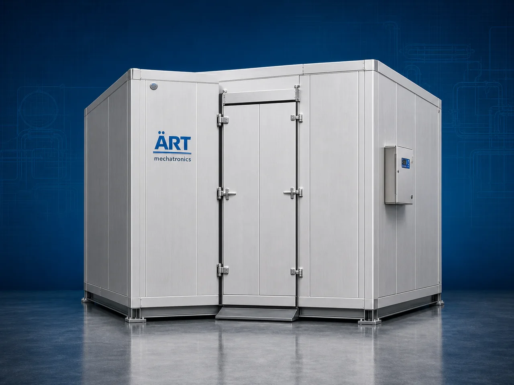

Cold Storage / Cold Room Machine (Industrial Refrigerated Storage System)
A Cold Storage Machine, also known as a Cold Room, Refrigerated Storage System, Industrial Cold Room, or Temperature Controlled Storage System, is an advanced industrial refrigeration solution designed for low-temperature storage, product preservation, shelf-life enhancement, cold chain management, humidity control, and continuous refrigerated storage operations across food processing, dairy, pharmaceuticals, fruits, vegetables, frozen foods, beverages, nutraceuticals, and industrial manufacturing industries.

About the Cold Storage/ Cold Room
Cold storage systems are widely used for:
- Food preservation operations
- Fruit and vegetable storage
- Frozen food warehousing
- Pharmaceutical cold storage
- Dairy product refrigeration
- Beverage chilling systems
- Controlled temperature warehousing
- Industrial cold chain management
The machine improves:
- Product shelf life
- Product freshness and quality
- Temperature stability
- Inventory preservation
- Moisture and humidity control
- Industrial hygiene standards
- Cold chain productivity
Industrial cold storage machines use:
- High-efficiency refrigeration systems
- Insulated PUF panel chambers
- Industrial evaporator and condenser units
- PLC and HMI automation controls
- Precision temperature and humidity monitoring systems
to maintain controlled low-temperature environments for safe and efficient industrial storage with superior cooling efficiency and reliable long-term performance.
Cold storage and cold room machines are widely used in industries such as:
Food processing industries Fruit and vegetable industries Frozen food industries Dairy industries Pharmaceutical industries Beverage industries Hospitality industries Industrial warehousing industries
where reliable refrigeration, product preservation, and cold chain continuity are essential.
The machine is highly suitable for:
- Refrigerated food storage
- Frozen product warehousing
- Pharmaceutical preservation systems
- Dairy and beverage chilling
- Controlled humidity storage
- Industrial cold chain logistics systems
ART Mechatronics offers high-performance cold storage and cold room machines, engineered for continuous industrial operation, energy-efficient refrigeration, hygienic storage environments, and reliable long-term industrial productivity.
Working Principle of Cold Storage / Cold Room Machine
- 1. Product Loading & Storage Process Products are loaded into insulated cold storage chambers through hygienic storage handling systems.
- 2. Refrigeration & Temperature Control Process Machine circulates refrigerant through evaporators, compressors, and condensers to maintain precise low-temperature conditions.
Advanced refrigeration technology ensures stable cooling and reliable product preservation operations.
- 3. Cooling & Product Preservation Operation Machine handles storage of: ✔ Fruits and vegetables ✔ Frozen foods ✔ Dairy products ✔ Beverages ✔ Pharmaceutical products ✔ Nutraceutical materials ✔ Food ingredients ✔ Industrial temperature-sensitive products
accurately and continuously.
- 4. Environmental Stabilization & Humidity Control Process Machine performs: Refrigerated storage Frozen preservation Temperature stabilization Humidity management Cold chain maintenance Product freshness protection
for efficient industrial storage and logistics operations.
- 5. Intelligent Automation & Energy Management Integration Optional systems include: Digital temperature monitoring systems Remote monitoring systems Humidity control systems Automatic defrost systems Data logging systems
- 6. Product Dispatch & Cold Chain Transfer Stored products discharged automatically for: Packaging operations Retail distribution Export shipment handling Cold logistics systems Industrial production use
Types of Cold Storage / Cold Room Machines
- 1. Walk-In Cold Room Designed for: ✔ General industrial refrigerated storage applications
- 2. Frozen Storage Room Suitable for: ✔ Deep freezing and frozen product warehousing systems
- 3. Pharmaceutical Cold Storage Machine Uses: ✔ Medicine and vaccine preservation operations
- 4. Modular Cold Room System Designed for: ✔ Flexible industrial refrigeration installations
- 5. Controlled Atmosphere Cold Storage Suitable for: ✔ Fruit and vegetable preservation applications
- 6. Fully Automatic Industrial Cold Storage System Designed for: ✔ Complete cold chain automation and warehousing systems
Industries Using Cold Storage / Cold Room Machines
🍅 Food Processing Industry Food ingredient preservation and refrigerated warehousing systems. 🍓 Fruit & Vegetable Industry Fresh produce storage and controlled atmosphere preservation systems. ❄️ Frozen Food Industry Frozen product warehousing and industrial cold chain systems. 🥛 Dairy Industry Milk, yogurt, butter, and dairy refrigeration systems. 💊 Pharmaceutical Industry Medicine storage, vaccine preservation, and temperature-controlled warehousing systems. 🥤 Beverage Industry Juice, soft drink, and beverage chilling and storage systems.
Features & Advantages
- High-efficiency industrial refrigeration operation
- Accurate temperature and humidity control systems
- Energy-efficient cooling technology
- PLC and automation control systems
- Improves product shelf life and freshness
- Reduces spoilage and temperature fluctuations
- Supports multiple food and pharmaceutical products
- Reliable long-term industrial performance
- Smooth integration with industrial cold chain systems
Technical Highlights
Machine Type: Cold storage machine Industrial cold room system Refrigerated storage unit Material Compatibility: Food products Fruits and vegetables Frozen foods Dairy products Pharmaceutical materials Beverages Nutraceutical products Integration: Industrial refrigeration systems PUF insulated panel chambers Evaporator and condenser systems Temperature monitoring systems Features: PLC control system Touchscreen HMI Stainless steel or insulated panel construction Automatic defrost systems Data logging systems Applications: Cold storage Frozen preservation Temperature-controlled warehousing Cold chain management Humidity control Industrial refrigeration Automation: Semi-automatic Fully automatic industrial systems
Turnkey Cold Storage Solutions
ART Mechatronics offers: Complete cold storage and cold room systems Automatic refrigeration and preservation solutions Industrial cold chain management systems Warehouse refrigeration integration systems Installation & commissioning After-sales service & AMC
Why Choose Art Mechatronics
Expertise in industrial refrigeration and cold chain automation systems Customized cold storage solutions for multiple industries High-performance and energy-efficient refrigeration technology Advanced PLC and automation systems Proven industrial cold chain performance across sectors
Applications
Food Processing Plants Fruit & Vegetable Storage Facilities Frozen Food Warehouses Dairy Processing Units Pharmaceutical Industries Industrial Cold Chain Warehouses
Related Process Equipment machines
Get pricing & specs for the Cold Storage/ Cold Room
Share the product, target capacity, current process and plant location. These details help our engineers discuss the right machine or line configuration.
One partner, from design to start-up
ART Mechatronics designs, manufactures, installs and commissions your Cold Storage/ Cold Room solution with regional presence in India, UAE and Thailand.